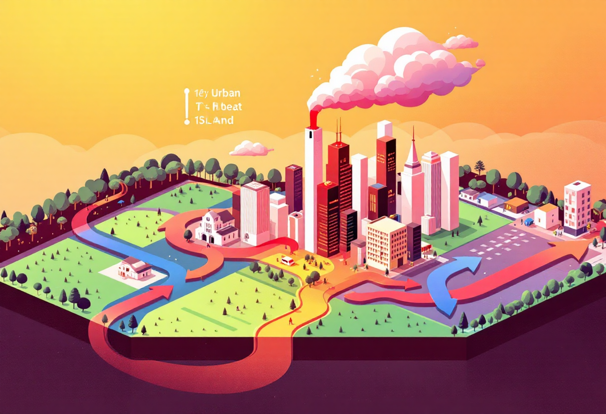

Les chiffres clés
🌡️ En 2022, les canicules ont causé plus de 11 000 décès en Europe.
🌆 En ville, la température peut être de 7°C supérieure à la campagne environnante.
🌳 Un arbre mature peut évaporer jusqu’à 450 litres d’eau par jour.
Comprendre le phénomène
Les canicules urbaines sont amplifiées par les matériaux comme le béton et l’asphalte qui emmagasinent la chaleur.
Le manque de végétation et d’ombre accentue la chaleur ressentie, surtout la nuit.
Ce phénomène est appelé "îlot de chaleur urbain".

Des solutions concrètes
🌿 Végétalisation des toits, murs et rues.
💧 Création de fontaines, brumisateurs et espaces ombragés.
🚲 Développement des mobilités douces pour réduire la pollution.